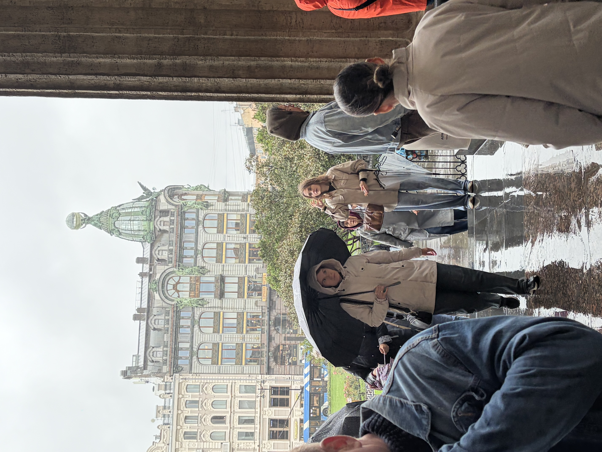
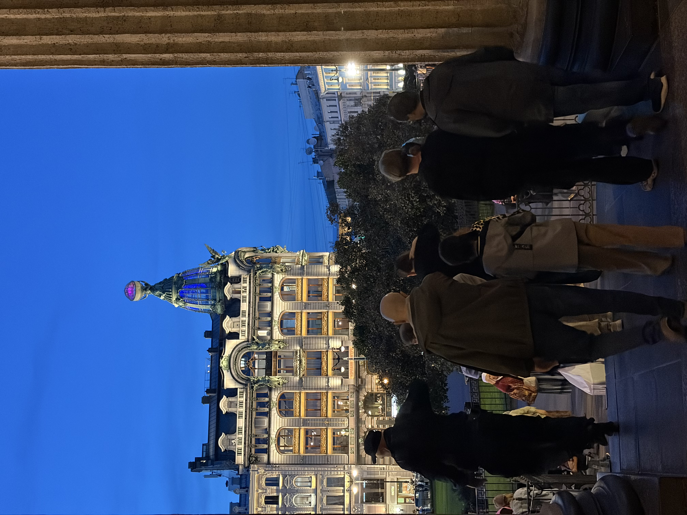
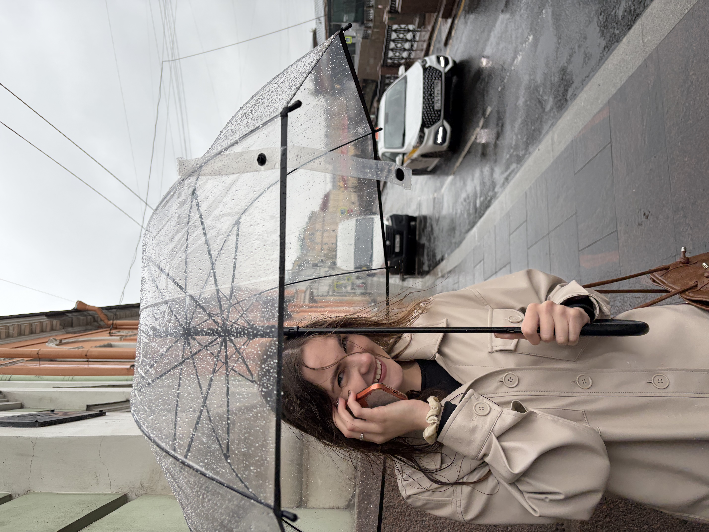
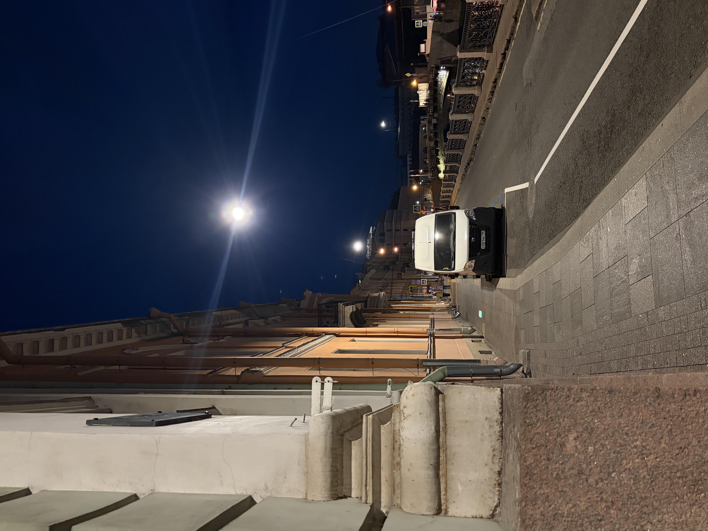
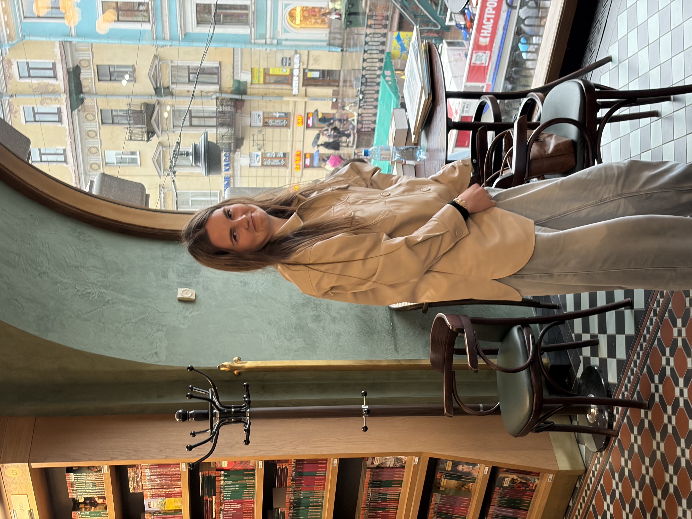
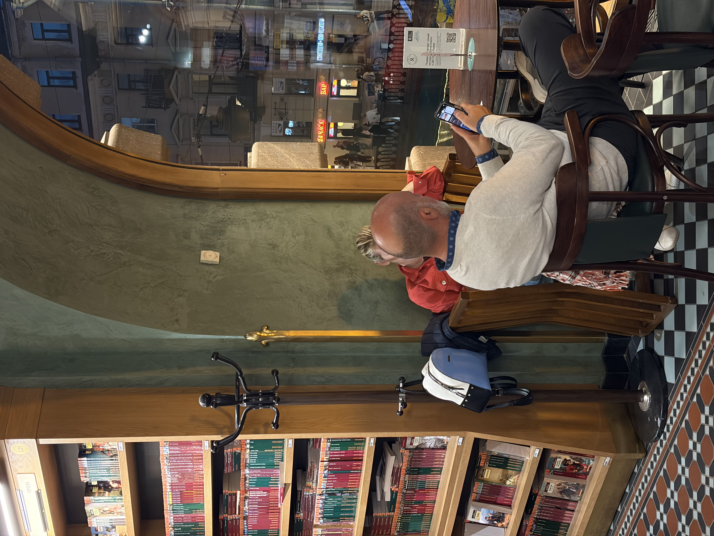
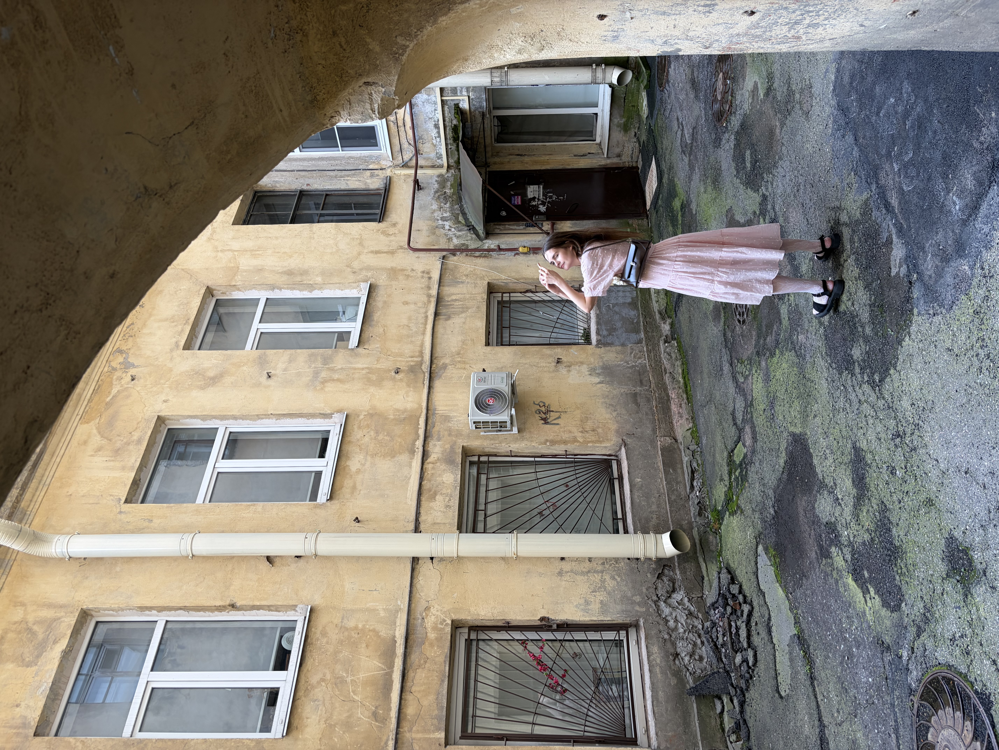
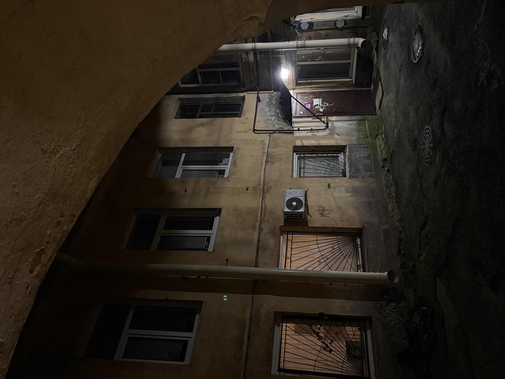
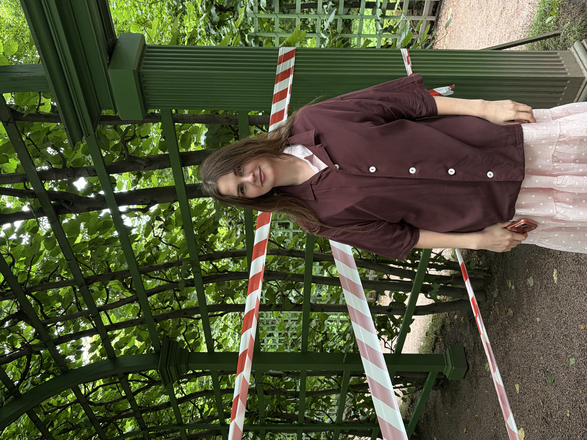
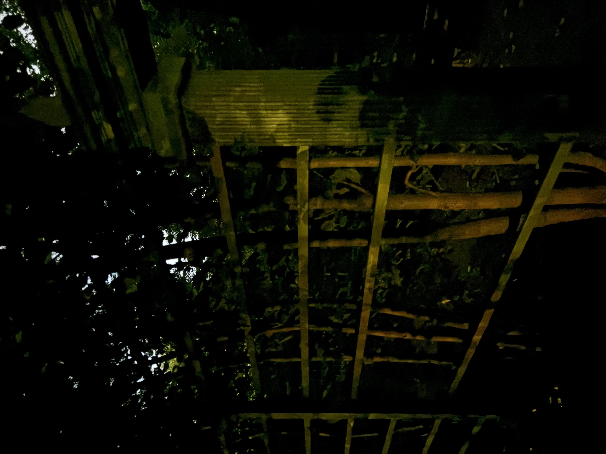

После отъезда я на месяц перебрался в родной посёлок. На севере летом ночи светлые, и мы с тобой созванивались почти каждую ночь. Начинали в полночь, а за окном незаметно светало и на часах было уже 3–4 утра. Мы говорили обо всём, но больше всего мне нравились сочиненные пьесы по ролям про Боранова и т.д... Ты связала мне лягушку перед отъездом, а я потом брал её в лес и фотографировал на фоне паучьего мха и деревьев, чтобы передать тебе привет из другого региона. Мы наговорили больше 60 часов. И всё равно каждый раз, кладя трубку, я думал с грустью: это только звонки. Какими бы интересными они ни были, они не заменят реальных встреч


Ты говорила, что, возможно, приедешь в Петербург. Я на самом деле ждал этого и когда ты написала, что билеты взяты, я обрадовался, будто вселенная дала нам ещё один мостик, ещё одну попытку соединить прошлое с будущим. Мы встретились на Финском вокзале. Ты стояла под зонтом. С неба капал дождь, было пасмурно. И не было ни малейшей неловкости, мы как будто и не разлучались на месяц. Просто продолжили с того места, где остановились на ростовском вокзале.


Мы гуляли по городу каждый день. Эрмитаж, Казанский собор, концерт Маликова. Ты много фотографировала, я фотографировал тебя. Мы разговаривали обо всём на свете и просто молчали, когда слова были не нужны. Это была та самая «незамысловатая, но интересная жизнь», которую ты когда-то открыла для меня и о которой я писал на прошлый страничках. Только теперь она была не в школе, а в Петербурге.


В последний день мы провели вместе полдня, а в 17 тебе уже надо было уезжать. Но и этот день закончился. Я проводил тебя на вокзал. Мы обнимались, ты грустила и говорила, что хочешь остаться. А когда поезд ушёл, я вернулся в пустую хатку и пока на фоне говорили о том, что "дверь открыта", я думал о том, дальше барахтаться придётся одному


После твоего отъезда я пошёл фотографировать те же места, где мы были вместе. С тех же ракурсов, но уже без тебя — я хотел запечатлеть пустоту. Самыми сильными стали фото с Дома Книги и у Казанского собора. На тех снимках, где ты есть, чувствуется соприкосновение двух миров. А там, где тебя нету, это просто какой-то другой город, другие люди, другое время суток. Как будто это вообще другая реальность. Сейчас, глядя на эти фотографии, я не верю, что это вообще происходило. Всё кажется настолько давним и нереальным, картинки созданы нейросетью. Ну не может быть, чтобы ты действительно тут была. Но потом вспоминаю, что ты действительно тут была.


Этой страницей я хочу сказать тебе спасибо. За то, что ты была рядом не только в переписке, а в реальности. В один из самых важных и тяжёлых моментов моей жизни — когда я менял город, работу, знакомых. Ты приехала, осталась на день дольше, и это больше, чем я мог просить. Я не знаю, что будет дальше. Но я знаю, что та неделя в Петербурге была настоящей. И я благодарен тебе за неё!
Спасибо, что заглянула сюда ещё раз,
Володя Английский